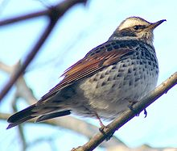
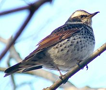

| Dusky Thrush | |
|---|---|
|  | |
| Conservation status | |
| Binomial name | |
| Turdus eunomus Temminck, 1820 |
| Dusky Thrush | |
|---|---|
|  | |
| Conservation status | |
| Binomial name | |
| Turdus eunomus Temminck, 1820 |
The Dusky Thrush, Turdus eunomus, is a member of the thrush family Turdidae which breeds eastwards from central Siberia. It is closely related to the more southerly breeding Naumann's Thrush T. naumanni; the two have often been regarded as conspecific.
This species breeds in open woodland areas, but unlike Naumann's Thrush, Dusky Thrush is more tolerant of mountainous and tundra-edge habitats. This species is strongly migratory, wintering south to southeast Asia, principally in China and neighbouring countries. It is a rare vagrant to western Europe.
It nests in trees, laying 3-5 eggs in an untidy but neatly lined nest. Migrating birds and wintering birds often form small flocks. It is omnivorous, eating a wide range of insects, especially mosquitoes, earthworms and berries.
This is a medium-sized but stocky thrush, reminiscent in structure of a small Fieldfare. The underwing is reddish brown, and there is a pale supercilium.
Dusky Thrush has a dark brown back and rump; the face, breast, and flank spots rump are black and the belly and undertail are white. Naumann's Thrush in comparison has a paler brown back and head; the face, breast, flank spots and rump are reddish, and the belly and undertail are white.
The female is fairly similar to the male, but immatures have a weaker patterning.
The male Dusky Thrush has a simple fluted or whistling song, similar to the Redwing. There are suggestions that the songs of Dusky and Naumann's Thrush differ.

{kind=link}